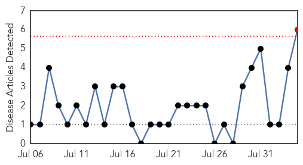
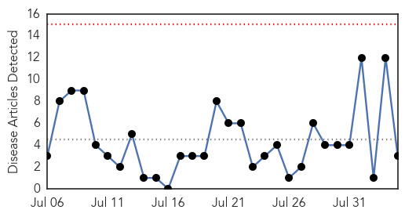
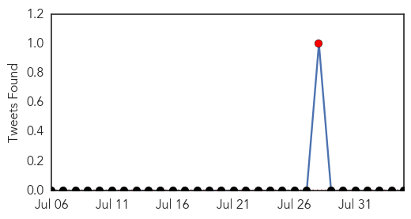

Pertussis
30-Day Web Trend
1 alerts, 0 warnings

30-Day Twitter Trend
0 alerts, 0 warnings

Article Locations
Article Confidences

Top Articles:
- 0.958
- Pertussis in Central Otago
- 0.909
- Expectant mothers in California urged to vaccinate for whooping cough
- 0.833
- School Starts Soon—Is Your Child Fully Vaccinated?
- 0.814
- Miami area Congressman Curbelo whooping cough diagnosis: vaccine ineffective?
- 0.794
- Public health officials warn about whooping cough
- 0.528
- State issues pertussis warning, urges vaccinations for pregnant women
Top Tweets:
-
No tweets found for Aug 04, 2015
Meningitis
30-Day Web Trend
0 alerts, 0 warnings

30-Day Twitter Trend
1 alerts, 0 warnings

Article Locations
Article Confidences
Top Articles:
Top Tweets:
-
No tweets found for Aug 04, 2015